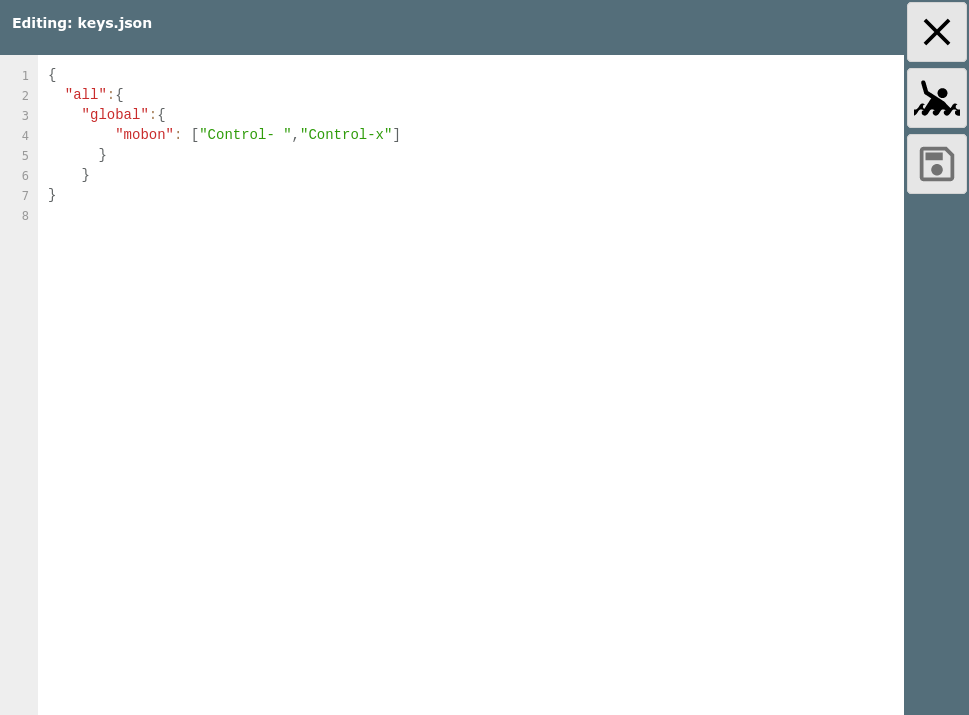

AvNav hat eine Unterstützung für die Bedienung wichtiger Funktionen über
Tastenkürzel.
Die Zuordnung zwischen Tasten und Funktionen kann dabei relativ frei
konfiguriert werden.
Die Zuordnung erfolgt dabei über 3 Stufen:
Es kann dabei den jeweiligen Funktionen eine oder mehrere Tasten zugeordnet werden. Ein spezifischere Konfiguration gewinnt dabei (also wenn es z.B. eine Zuordnung für die Seite "all" gibt und eine andere für z.B. die Seite "navpage", dann gewinnt die letztere).
Die Zuordnung der Tasten erfolgt über eine Datei keys.json im Nutzer-Verzeichnis. Diese Datei kann dort direkt bearbeitet werden. Es gibt dazu noch eine in AvNav eingebaute Datei mit den default-Zuordnungen.
In der Datei im user Verzeichnis können die Werte aus der default-Datei überschrieben werden.

Mit diesem Beispiel werden auf allen Seiten dem Button "Mann über Board"
die Tasten Ctrl-Leer und Ctrl-x zugeordnet.
Wenn nur eine Taste zugeordnet werden soll, müssen keine eckigen Klammern
angegeben werden. Nach dem Speichern der Änderungen muss die AvNav Seite
neu geladen werden.
Die Liste der Seiten, Gruppen und Funktionen ist hier immer nur der aktuelle Stand beim Erstellen der Dokumentation. Es werden Stück für Stück weitere hinzu kommen.
Die Namen für die Keys entsprechen den Werten laut der Dokumentation.
Wenn die Control (Strg) Taste dazu gedrückt ist, wird ein "Control-" vor
den Namen gesetzt.
Die Namen der Funktion in der Gruppe "button" sind jeweils die Namen der
Buttons, so wie sie in der Nutzerbeschreibung
dokumentiert sind.
Ein Klick auf ein Widgets kann über die Gruppe "widgets" und den Namen des
Widgets erreicht werden (die Namen sieht man im Layout
editor). Ein SOG widget wäre z.B. mit
mit der Taste s auf allen Seiten anklickbar.
Die Buttons in Dialogen sind über die Gruppe "dialogButton" und den Namen des buttons erreichbar. Diesen kann man leicht aus dem HTML code z.B. mit den Entwicklertools des Browsers ablesen. Man sollte allerdings nur spezielle Keys den dialogButtons zuordnen, da sonst potentiell keine normale Werte-Eingabe mehr möglich ist.
In der folgenden Tabelle sind die Gruppen und Funktionen aufgelistet, die entweder in den default Einstellungen bereits eine Taste zugewiesen haben - oder aber weder button, dialogButton noch widget sind. Texte in Klammern in der Tabelle sind Hinweise zur Funktion.
| Seite | Gruppe | Funktion | Default Keys |
| all | button | Cancel | "Escape" |
| map | zoomIn | ["+","PageUp"] | |
| zoomOut | ["-","PageDown"] | ||
| up | "ArrowUp" | ||
| down | "ArrowDown" | ||
| left | "ArrowLeft" | ||
| right | "ArrowRight" | ||
| lockGps (Kartenmitte auf Position) | "l" | ||
| unlockGps | "u" | ||
| toggleGps | ["t","Control-a"] | ||
| toggleCourseUp | "b" | ||
| centerToGps (einmalig Boot in Kartenmitte) | |||
| alarm | stop | "a" | |
| global |
mobon |
["Control- "] |
|
| moboff | |||
| mobtoggle | |||
| addon | 0 (erstes addon) | "Control-0" | |
| 1 | "Control-1" | ||
| 2 | "Control-2" | ||
| 3 | "Control-3" | ||
| 4 | "Control-4" | ||
| 5 | "Control-5" | ||
| 6 | "Control-6" | ||
| 7 | "Control-7" | ||
| gpspage (Dashboard) | button | Cancel | ["d","Escape"] |
| navpage (Navigationsseite) | widget | AisTarget | "a" (geht zur Ais Info Seite) |
| COG | "d" (geht zum Dashboard, mit d kann man so zwischen Navigationsseite und Dashboard hin- und herschalten) | ||
| button | LockMarker (starte Navigation zur Kartenmitte) | "g" | |
| StopNav | "s" | ||
| ShowRoutePanel (gehe zum Routen-Editor) | ["Control-r","r"] | ||
| map | centerToGps (einmalig Boot in Kartenmitte) | "c" | |
| page | centerToTarget (aktuellen Wegpunkt in Kartenmitte) | "w" | |
| navNext (Navigation zum nächsten Punkt in der Route) | ["n","Control-n"] | ||
| toggleNav (Navigation ein/aus) | ["Control-g"] | ||
| mainpage (Hauptseite) | page | selectChart (wähle die selektierte Karte und gehe zur Navigationsseite) | "Enter" |
| nextChart | ["Tab","ArrowDown"] | ||
| previousChart | "ArrowUp" | ||
| button | ShowSettings | "Control-+" | |
| ShowStatus | "Control-s" | ||
| ShowGps | "d" | ||
| Night | ["c","Control-c","Control-g"] | ||
| infopage (Lizenz) | |||
| addonpage (andere webseiten) | |||
| addresspage (Anzeige der QR codes) | |||
| statuspage (Server Status) | |||
| wpapage (Wifi Steuerung) | |||
| routepage (Routen Liste) | |||
| downloadpage (Files/Download) | |||
| settingspage (Einstellungen) | |||
| editroutepage (Routen Editor) | |||
| addonconfigpage (Konfiguration von User Apps) | |||
| viewpage (Anzeige/Editieren) |